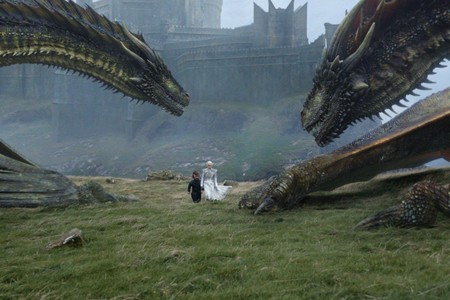

PEQUEÑA INFOMARCIÓN
Game of Thrones (conocida como Juego de tronos en España y abreviada como GOT) es una serie de televisión de drama y fantasía medieval desarrollada por David Benioff y D. B. Weiss y producida por la cadena HBO.
Su argumento está inspirado en la serie de novelas Canción de hielo y fuego, escrita por el estadounidense George R. R. Martin,
y relata las vivencias de un grupo de personajes de distintas casas nobiliarias en el continente ficticio de Poniente para tener el control del Trono de Hierro y gobernar los siete reinos que conforman el territorio.
El desarrollo de la serie se remonta a 2006, cuando Benioff y Weiss tuvieron una reunión con Martin para discutir ideas en torno a una adaptación televisiva de su material literario.
Si bien los guiones del episodio piloto, «Winter Is Coming», quedaron concluidos en 2008,
las grabaciones tuvieron lugar en 2010 bajo la dirección de Tim Van Patten.
A lo largo de ocho temporadas y más de setenta episodios, Game of Thrones cubre el argumento de las primeras cinco novelas de Martin con ciertas modificaciones
y la adición de material inédito a partir de una descripción del autor sobre los eventos futuros de su universo literario. Se trata de una de las series más costosas en la historia de la televisión,
cuyo rodaje llegó a involucrar hasta cuatro unidades de filmación en paralelo y la producción de efectos visuales requirió de la participación simultánea de hasta catorce estudios en distintos países.
El primer episodio se estrenó en abril de 2011 en Estados Unidos y Canadá y desde 2015 la transmisión de sus episodios se llevó a cabo de forma simultánea en más de un centenar de países.
La serie posee elevados niveles de audiencia y es uno de los programas de televisión bajo demanda más populares de HBO,
así como uno de los «mayores dramas» y el «programa más comentado» de la televisión en 2014.
Ciertos medios, como The Washington Post, Time, The Hollywood Reporter y Rolling Stone la catalogaron como una de las mejores series de televisión y la crítica ha elogiado aspectos como sus actuaciones,
los guiones, los efectos especiales, las secuencias de batallas y la música,
esta última a cargo del compositor Ramin Djawadi.No obstante, también ha recibido comentarios desfavorables por sus escenas de violencia,
sexo y desnudez.Entre sus numerosos premios y reconocimientos sobresale la mayor cantidad de galardones Emmy obtenidos en toda la historia de la ceremonia.
Su éxito ha dado lugar a la producción de una amplia variedad de productos entre los cuales se incluyen juguetes, videojuegos, libros y réplicas de armas y armaduras,
lo cual la convierte en una de las marcas más populares del sector televisivo.
A mediados de 2017 HBO anunció su interés en producir nuevas series inspiradas en Canción de hielo y fuego, cuya trama habría de servir de precuela a los acontecimientos de Game of Thrones
En las colinas nevadas del Norte, más allá de Invernalia pero aún lejos del Muro, había un pequeño pueblo llamado Frosthaven. Era un lugar olvidado por los señores de Poniente, un refugio para los exiliados y aquellos que no querían arrodillarse ante nadie. Entre ellos vivía Lyra, una joven cazadora que decía ser hija ilegítima de un Stark, aunque nadie sabía si era verdad o solo un cuento que contaba para mantener a raya a los bandidos.
Una noche, cuando el viento aullaba como un lobo hambriento, Lyra vio algo extraño en el bosque: una figura encapuchada que arrastraba una caja pesada, dejando un rastro de sangre en la nieve. Intrigada y cautelosa, siguió al desconocido, manteniéndose a una distancia segura. Finalmente, lo vio detenerse en un claro iluminado por la luna. El extraño abrió la caja y, para su sorpresa, sacó un huevo de dragón, negro como la noche pero con vetas rojas como el fuego.
Lyra no podía creerlo. Los dragones se habían extinguido hacía siglos, o eso decían las historias. Pero ahí estaba, un símbolo del poder de los Targaryen, oculto en los bosques del Norte. El hombre encapuchado comenzó a murmurar palabras en una lengua antigua, y el huevo empezó a brillar débilmente.
De repente, un crujido resonó detrás de Lyra. Se giró y vio a un grupo de Caminantes Blancos emergiendo de entre los árboles. La magia del huevo debía haberlos atraído. Lyra tenía que tomar una decisión: huir y salvar su vida o intentar detener a los Caminantes y proteger el huevo.
Con un grito feroz, desenvainó su espada y corrió hacia el claro. El encapuchado, sorprendido por su llegada, dejó caer el huevo. Lyra lo atrapó en el aire y, sin pensarlo dos veces, lo lanzó al fuego que el hombre había encendido. Una explosión de calor y luz llenó el claro, y un pequeño dragón, negro y rojo, salió de las llamas.
El dragón rugió, y el fuego se extendió como un torbellino, consumiendo a los Caminantes Blancos. Cuando el caos terminó, el encapuchado había desaparecido, y el dragón se posó en el hombro de Lyra, ronroneando como un gato.
Desde ese día, Lyra fue conocida como "La llama del Norte". Con su dragón a su lado, juró proteger a su pueblo de las sombras que acechaban más allá del Muro y descubrir quién había traído el huevo al Norte... y por qué.
